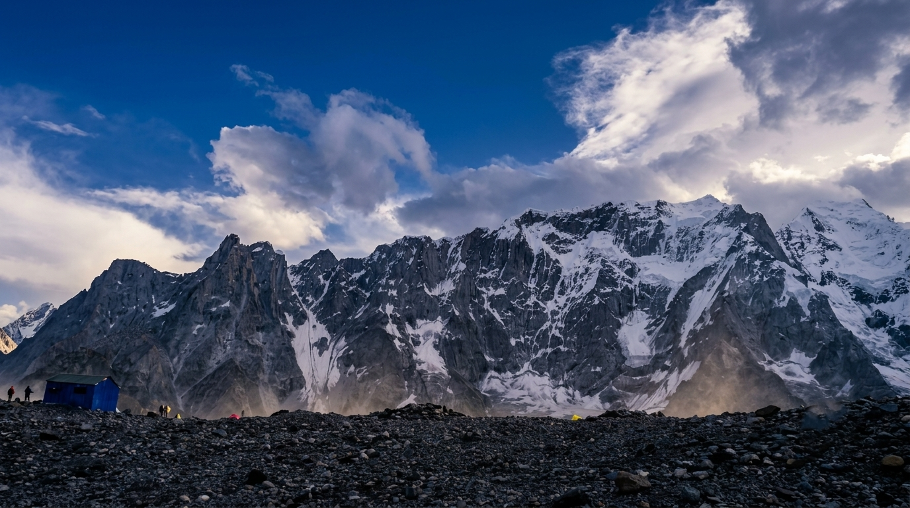
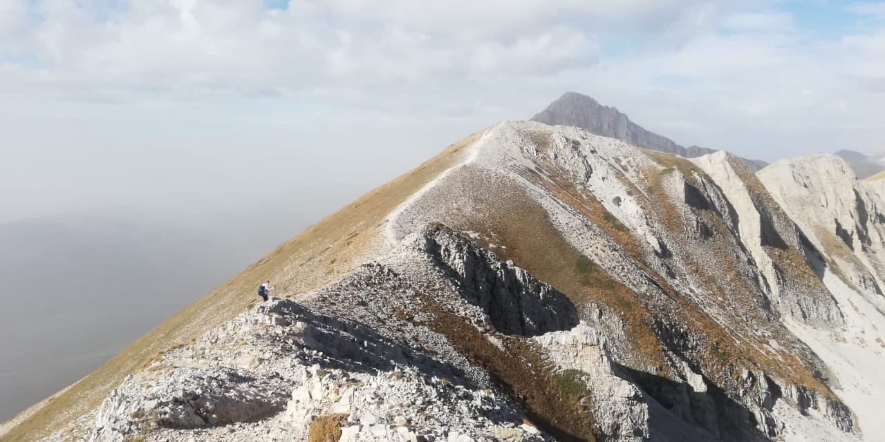
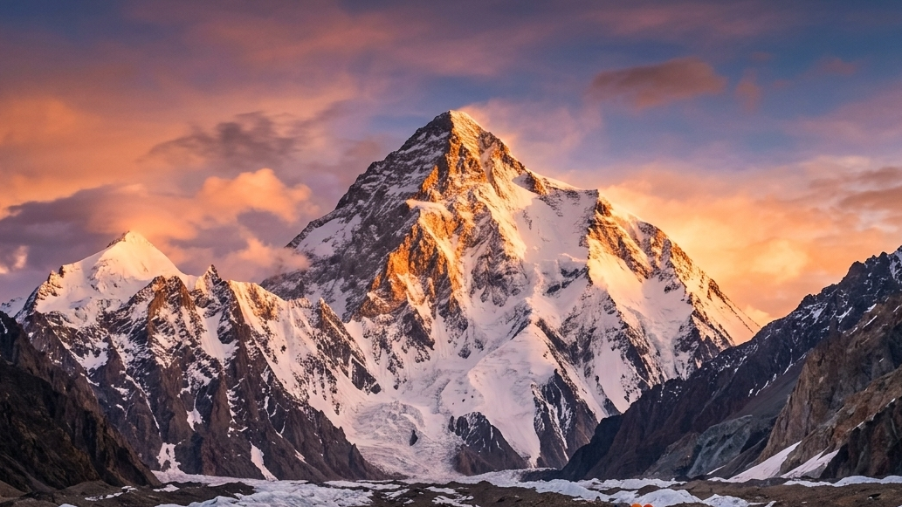
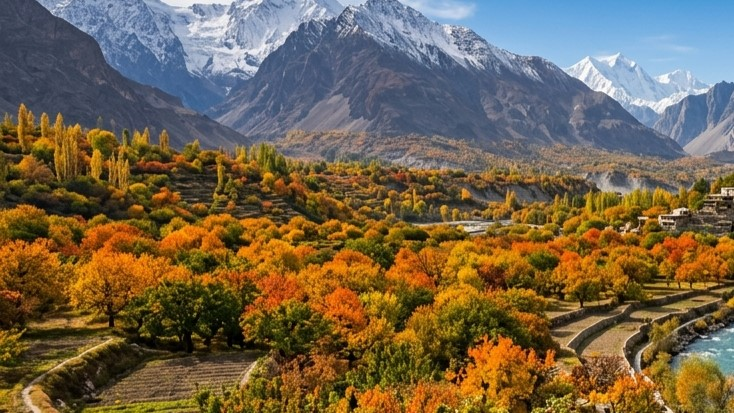
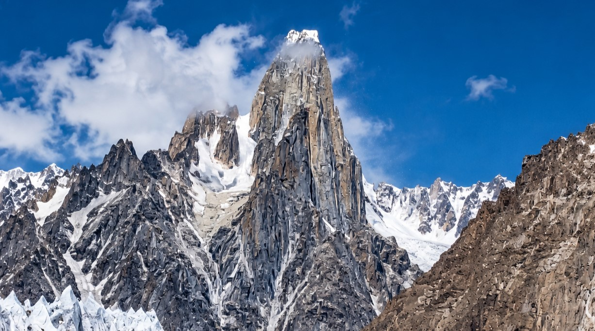
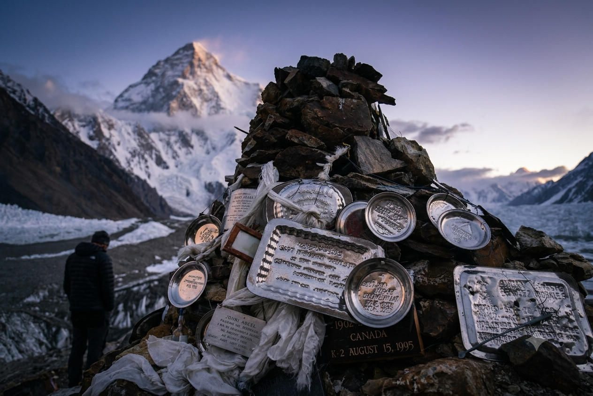

Twenty-six years on these trails, now under one name.
Great Adventure runs treks and expeditions across Baltistan — K2 Base Camp, Concordia, Gasherbrum, Trango Towers and beyond — guided by two and a half decades of on-ground Karakoram experience.
Guided by someone who has actually walked the route.
Great Adventure was built on twenty-six years of field experience in Baltistan — not borrowed credentials, not a rebrand, but the direct, on-ground work of planning and leading trips through some of the world's highest terrain.
That experience shows up in the details tourists notice first: routes planned around real weather windows, porters and guides who know each valley personally, and a response time that doesn't leave you waiting when you're trying to plan a trip from another country.
We now bring that same standard of service directly to travellers, under our own name.
✓ Local Skardu-Based Team
✓ Visa Assistance Available
✓ 26 Years Field Experience
26
Years of Karakoram field experience
1,200+
Travellers guided
18
Routes covered
24h
Avg. reply time
The classic line
Skardu to K2 Base Camp, mapped in altitude.
Our signature route — the one most travellers ask for first. Six stops, four thousand metres of climb, one of the most dramatic approaches on earth.
Skardu
2,228 m
Askole
3,000 m
Paiju
3,450 m
Urdukas
3,900 m
Concordia
4,600 m
K2 Base Camp
5,150 m
Beyond K2
The giants of Baltistan.
K2 gets most of the attention, but the region holds one of the densest clusters of great peaks and climbing objectives on earth — all reachable from the same base routes we run.
8,000m Peak
K2
8,611 m
World's 2nd highest peak
First climbed in 1954 by an Italian expedition led by Ardito Desio. You get close-up views from our K2 Base Camp & Concordia and K2 & Broad Peak treks — no technical climbing needed to reach base camp.
8,000m Peak
Broad Peak
8,051 m
Neighbours K2 on the Baltoro
First climbed in 1957 by an Austrian team including Hermann Buhl. Its long, wide summit ridge is where the name comes from. Visible throughout our K2 & Broad Peak Base Camp trek.
8,000m Peak
Gasherbrum I (G1)
8,080 m
Also known as Hidden Peak
First climbed in 1958 by an American expedition. Nicknamed “Hidden Peak” because it stays out of sight from Concordia until you're almost at its base. Featured on our Gasherbrum Base Camp trek.
8,000m Peak
Gasherbrum II (G2)
8,035 m
Most climbed 8,000er in Pakistan
First climbed in 1956 by an Austrian team. Technically more approachable than most 8,000m peaks, which is why it sees the most successful summits in the country each year.
7,000m Peak
Masherbrum (K1)
7,821 m
First named "K1" by surveyors
The very first Karakoram peak given a survey “K” designation, before K2 overtook it in fame. First climbed in 1960 by an American-Pakistani team.
Big Wall
Great Trango Tower
6,286 m
One of the tallest vertical rock faces on earth
Home to over 1,300m of sheer, unbroken granite — one of the biggest big-wall climbs on the planet. A magnet for the world's top rock climbers since the 1970s.
Big Wall
Trango Towers
6,239 m
World-renowned big-wall climbing objective
First climbed in 1976 by a British team. Its needle-like granite spire (the Nameless Tower) is instantly recognisable on the Baltoro skyline. Reached on our Trango Towers Base Camp trek.
7,000m Peak
Muztagh Tower
7,273 m
Iconic spire above the Baltoro glacier
A striking twin-summited spire first climbed in 1956 by two rival expeditions — British and French — within days of each other, on opposite sides of the mountain.
8,000m Peak
Gasherbrum IV
7,925 m
Just short of 8,000m, but never short of drama
Narrowly misses the 8,000m club, but many climbers rate its shimmering, near-vertical north-west face as the most beautiful mountain wall on earth.
7,000m Peak
Chogolisa
7,665 m
A quiet giant on the upper Baltoro
Where Hermann Buhl disappeared through a cornice in 1957, days after his historic Broad Peak first ascent. Seen from the higher reaches of our longer Baltoro treks.
Iconic Peak
Mitre Peak
6,010 m
Stands guard right at Concordia
A sharp granite pyramid that rises directly above Concordia — one of the most photographed peaks on the entire Baltoro trek.
...and dozens more 6,000–7,000m peaks, spires and glaciers across the Baltoro, Hushe and Nubra approaches — K7, Payu Peak, Biale, Uli Biaho, Cathedral Peak, Lobsang Spire, and more. Ask us about lesser-known objectives too.
Before you travel
Visa & Trekking NOC Guidelines.
The questions every international tourist has before booking a Pakistan trip — answered clearly, so you know exactly what to expect.
Tourist Visa
Most foreign trekkers only need Pakistan's standard e-Visa / Tourist Visa — no special permit is required just to trek. We provide an official invitation letter, which is required for your visa application.
Trekking NOC / Permit
Central Karakoram National Park treks require a trekking permit (NOC), arranged by us as part of your booking and included in the trek price. This does not require any extra action from you.
Best Season
June to September is peak trekking season for K2 Base Camp, Concordia and Broad Peak. Deosai is best from July to early September.
Visa — What You'll Need
Passport valid 6+ months from your travel date
Completed Pakistan e-Visa / Tourist Visa application
Invitation letter from Great Adventure (we provide this on booking)
Visa fee, paid directly to Pakistani immigration (varies by nationality)
Trekking NOC — How It Works
Applies to Central Karakoram National Park & restricted-zone treks
Arranged by our team once your group is confirmed
Fee already included in your trek price
No separate application needed from travellers on standard tourist visas
Requirements can change with government policy — we confirm the latest process with you directly once you enquire.
Transparent pricing
What's in the price, and what isn't.
General inclusions across most treks — each package's full itinerary page has the exact breakdown.
What's Included
Domestic flight (Islamabad – Skardu, return)
4x4 Jeep transport (Skardu to trailhead, return)
Professional trekking guide
Porters for group/camping equipment
3-time meals during trek + trail snacks (dry fruits, tea/coffee)
Camping equipment (tents, kitchen, dining tent)
Hotel stay in Skardu (pre/post trek)
Gilgit-Baltistan entry permit & Central Karakoram National Park (CKNP) fees
What's Not Included
Personal porter (for personal duffel bag)
Climbing/technical gear rental
Travel & medical/evacuation insurance
Visa fees
Bottled water & beverages during the trek
Single tent / private room supplement (available on request)
Personal expenses & tips
Meals in Skardu outside the trek dates
Tours & expeditions
Routes we know better than most.
Every itinerary below is one we've personally run, not one assembled from a brochure.
Loading…
Trek
K2 Base Camp & Concordia
The classic Karakoram trek to the base of the world's second-highest peak, through Baltoro glacier and Concordia's amphitheatre of 8,000ers.
A guided dual 8,000m summit expedition to K2 (8,611m) and Broad Peak (8,051m), climbed back-to-back via the Baltoro Glacier. Climbing permits and full logistics included.
A guided dual 8,000m summit expedition to Gasherbrum I (8,080m) and Gasherbrum II (8,035m) via the Baltoro and Abruzzi glaciers. Climbing permits and full logistics included.
A guided summit expedition to Masherbrum (7,821m) — the peak that first earned the "K" survey designation — via the remote Hushe Valley, eastern Baltistan.
A wild, little-visited trek up the Panmah Glacier from Askole to the base of the Ogre (7,285m) and the Latok towers — some of the most technical rock spires on earth.
Can't find the place you have in mind on this site? Select this option and simply tell us where you'd like to go — we'll design a private itinerary around your destination, dates, fitness level and interests. Also ideal for photography trips, private expeditions or family-paced journeys.
Photos from recent expeditions — replace with your own trip photography before launch.
Loading…

Loading…

Loading…

Loading…
Loading…

Loading…

Loading…

Loading…
Loading…
Loading…
Loading…
Loading…
Loading…
Loading…
Loading…
Loading…
Loading…
Loading…
Loading…
Loading…
In their words
What travellers say after the trek.
Real reviews from real travellers — submitted directly through this site.
Loading reviews…
Share your experience
Your review is checked before it goes live, so it may take a little while to appear.
★★★★★
0/400
✓
Thank you!
Your review has been submitted and will appear on the site once it's been checked.
Common questions
Before you ask, we've answered.
Everything most travellers want to know before booking a high-altitude trip in Baltistan.
Is altitude sickness a serious risk on these treks?+
Most of our routes are designed with proper acclimatization days built in. Guides are trained to recognise early symptoms, and itineraries include rest days at key altitudes. Travellers with a history of altitude issues should mention it when booking.
Do I need previous trekking experience?+
For Easy and Moderate treks (Deosai, Shigar Valley, Trango Towers), a reasonable fitness level is enough. Challenging routes like K2 Base Camp or Gondogoro La are better suited to trekkers with prior multi-day hiking experience.
What's the best time of year to visit?+
June to September is peak season for glacier treks and 8,000m base camps. Deosai is best from July to early September. Shigar Valley and cultural tours are enjoyable year-round.
Can you help with visa arrangements?+
Yes — we provide an official invitation letter for your Pakistan e-Visa / Tourist Visa application. Trekking permits (NOC) for Central Karakoram National Park are arranged by us and already included in your trek price. See our full Visa & Trekking NOC Guidelines above.
Is travel insurance required?+
We strongly recommend travel insurance with high-altitude and evacuation cover for any trek above 4,000m. It isn't included in our packages, so please arrange this before travelling.
How do I pay, and can I cancel later?+
A non-refundable deposit (30% for shorter treks, 50% for multi-week expeditions) confirms your booking, with the balance paid on arrival in Skardu. If your plans change: 50% refund of amount paid for cancellations 30+ days before departure, 25% for 15–29 days, 10% for 7–14 days, and no refund inside 7 days. Full details on our Booking Terms & Cancellation Policy page.
What size are the trekking groups?+
Group sizes vary by route — typically small groups of 2 to 12 travellers, so the pace stays personal rather than crowded. Private and custom-group departures can also be arranged.
Get in touch
Tell us what you have in mind.
Whether it's a fixed departure or a fully custom itinerary, send us your dates and we'll reply with a plan — usually within a day.